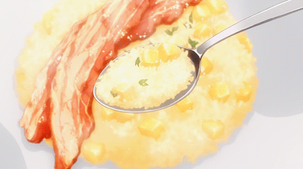

Apple Risotto

Apple risotto is a sweet twist of the traditionally savoury Italian recipe.
This dish was made popular in recent years by the Japanese anime Food Wars!: Shokugeki No Soma.
Ingredients
- Risotto
- 1/2 Apples
- 1 teaspoon of Lemon Juice
- 1/4 of Onion (Sauteed)
- 2 tablespoons of Butter
- 1/2 cup of Rice
- 2 tablespoons of White Wine
- 1 cup of Apple Juice
- 1 cup of Water
- 1 teaspoon of Granulated Consommé
- Salt & Pepper
- 4 slices of Thick-Cut Bacon
How to Cook
- the bacon in a frying pan until it's crispy and set to the side.
- Peel the apple and dice it in cubes of 1cm³.
- Mince the onion.
- Heat the butter in a frying pan and sauté the onions.
- Add the rice to (4) and cook until it's transparent.
- Add the white wine to (5) and cook it until the alcohol burns off.
- Mix the apple juice, water and consommé. Slowly add this 1/8 cup at a time to (6) simmering on low heat for 15 minutes (until all the liquid is absorbed).
- Add the apple dices and lemon juice to (7) and season it to taste with salt and pepper.
- Place (8) on a plate and top it with (1).
- You can use black pepper or powdered cheese as topping.
Take me Back!